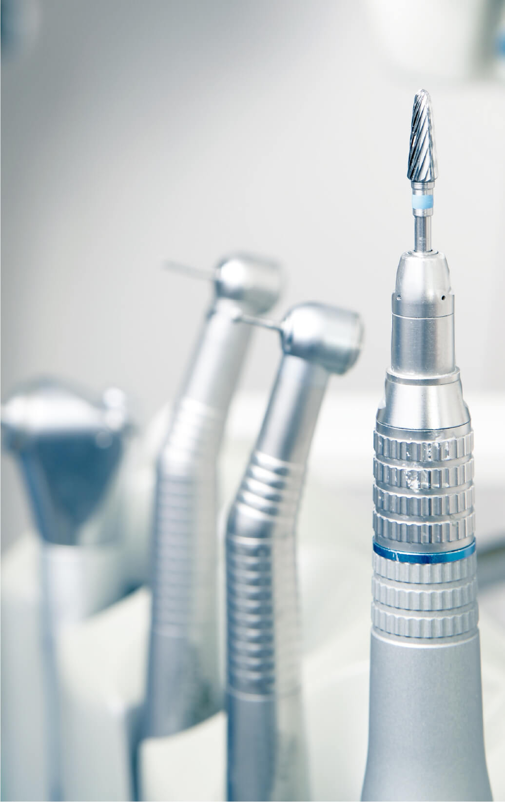
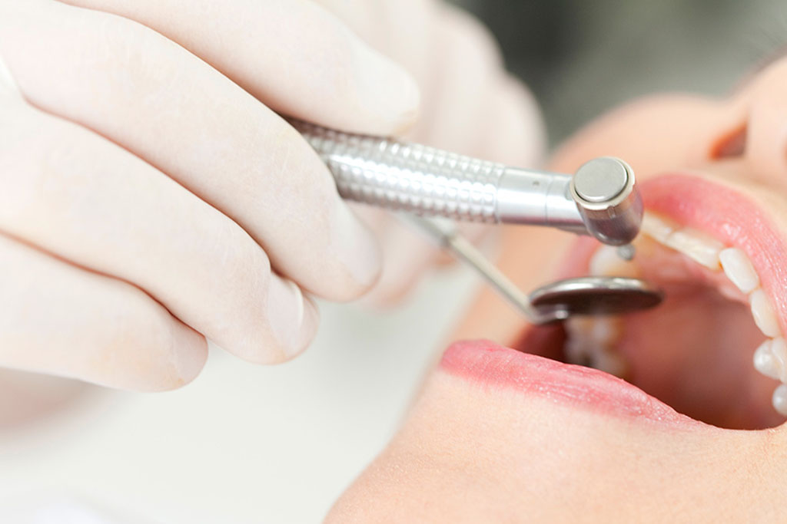
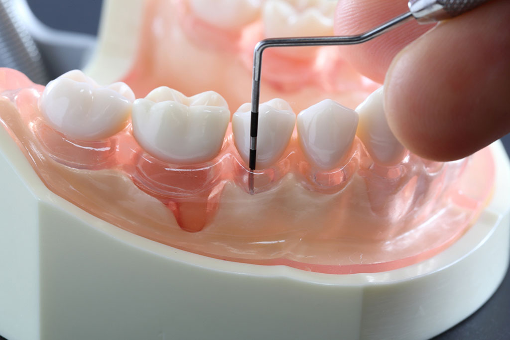
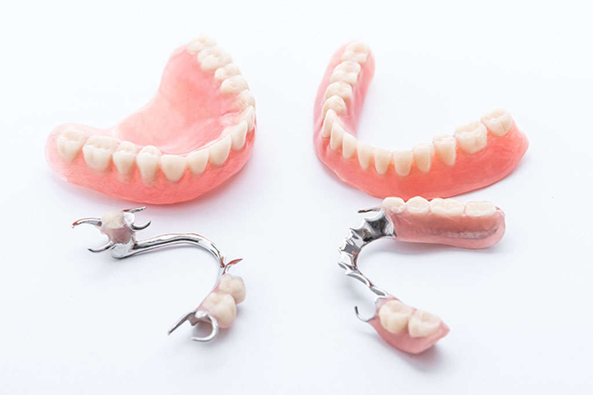

SERVICES
診療案内
むし歯

- 歯が痛い
- 歯がしみる
Caries
歯は自然治癒が難しく、治療が遅れるほど悪化して、大がかりな治療が必要になってしまいます。歯へのダメージはもちろん、時間的・費用的な負担を抑えるためにも、異変を感じたら早めに受診しましょう。
当院では再発を防ぐために、むし歯ができてしまった「原因」を突き止め、症状だけでなく原因そのものを改善する根本的なアプローチを行います。
当院では再発を防ぐために、むし歯ができてしまった「原因」を突き止め、症状だけでなく原因そのものを改善する根本的なアプローチを行います。
テキストテキストテキスト
テキストテキストテキストテキストテキストテキストテキストテキストテキストテキストテキストテキストテキストテキストテキストテキストテキストテキストテキストテキストテキスト
歯周病治療

- 歯ぐきが腫れている
- 歯磨きすると血が出る
Periodontal
disease
歯周病は、歯ぐきや歯を支える周りの組織が細菌によって炎症を起こす病気です。進行すると顎の骨が溶け、歯が支えられなくなって抜けてしまうこともあります。また、細菌によって誤嚥性肺炎や糖尿病、心疾患、脳梗塞、認知症などの重篤な病気を発症・悪化させることもわかってきました。
歯周病は怖い病気ですが、定期検診・クリーニング、毎日の丁寧な歯磨きで防ぐことができます。気になる症状がありましたら、早めの受診をおすすめいたします。
歯周病は怖い病気ですが、定期検診・クリーニング、毎日の丁寧な歯磨きで防ぐことができます。気になる症状がありましたら、早めの受診をおすすめいたします。
入れ歯

- 入れ歯を作りたい
- 入れ歯を直したい
Dentures
歯が抜けてしまった隙間を、そのままにしていませんか？
1本でも歯が抜けてしまうと、支えを失った周囲の歯が徐々に動いてしまうため、かみ合わせのバランスが悪くなり、むし歯や歯周病のほか、肩こりや頭痛など全身のトラブルまで引き起こすことがあります。
当院では患者さまのご希望をきちんとうかがい、お口にぴったり合う義歯を製作いたします。他院で製作したけれど、合わなくなってきた義歯の調整も承りますので、お気軽にご相談ください。
1本でも歯が抜けてしまうと、支えを失った周囲の歯が徐々に動いてしまうため、かみ合わせのバランスが悪くなり、むし歯や歯周病のほか、肩こりや頭痛など全身のトラブルまで引き起こすことがあります。
当院では患者さまのご希望をきちんとうかがい、お口にぴったり合う義歯を製作いたします。他院で製作したけれど、合わなくなってきた義歯の調整も承りますので、お気軽にご相談ください。
Higher medical institutions
連携している
高次医療機関のご紹介
より専門的な検査・治療が必要だと思われる場合は、連携している高次医療機関をご紹介いたします。
どうぞ安心してご来院ください。
どうぞ安心してご来院ください。

ビスカクリニック
〒160-0022
東京都新宿区新宿6丁目24-20
| 診療時間 | 月 | 火 | 水 | 木 | 金 | 土 | 日 | 祝 |
|---|---|---|---|---|---|---|---|---|
| 09:30～13:00 | ● | ● | ● | ／ | ● | ● | ／ | ／ |
| 14:00～19:00 | ● | ● | ● | ／ | ● | ★ | ／ | ／ |
休診日：木曜・日曜・祝日 ★：14:00-17:00
待ち時間の軽減のため、
予約優先で診療を行っております
インターネットでご予約（24時間受付）